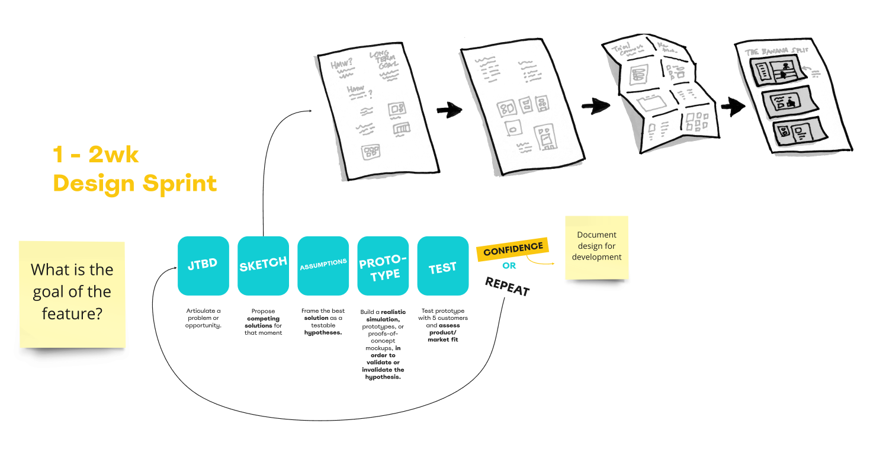
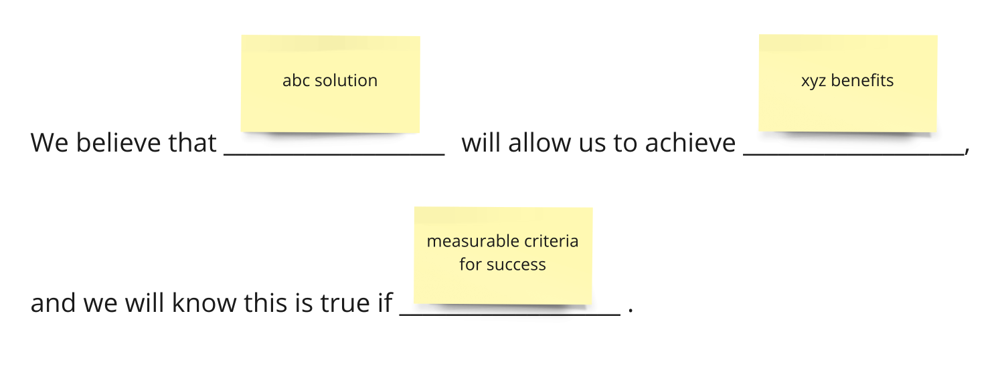
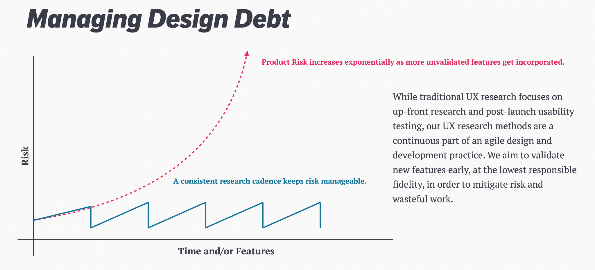

Novisto needed the product to be easier to navigate, easier to extend, and easier for ESG teams to trust as they collected data, managed requests, benchmarked performance, and prepared reports. I was brought in to help clarify the workflow, reduce noise, and make the system easier to work through.
The work was aimed at three things: help users find information and complete tasks faster, make the product easier to extend as new functionality was added, and give people a clearer sense of where they were in the process at any point in time.
That meant working on the underlying workflow, information architecture, request logic, and reporting structure rather than treating this like a visual cleanup.
Novisto was positioned as an all-in-one sustainability management platform. On paper, that meant companies could collect ESG data, improve data quality, benchmark performance, and communicate with internal and external stakeholders in one place. In practice, that also meant a lot of product surface area: metrics, fields, sources, requests, questionnaires, frameworks, standard codes, taxonomies, reports, and exports.
The 2022 SOW framed the core problem clearly: users did not have enough visibility into where they were in the workflow. The rest of the project materials point in the same direction. People needed the product to make progress, structure, and next steps easier to understand.
Clearer workflow visibility. Users needed to tell what had started, what was in progress, and what was complete without reconstructing the system in their heads.
Less noise. The platform was surfacing metrics and fields that were not always relevant to a given client, framework, or industry.
The complexity was real. This was not a simple “make it cleaner” problem. The product was carrying real business rules, reporting logic, and framework-specific requirements.
The interface and the model were tied together. You could not fix the experience without also making decisions about taxonomy, source handling, benchmark setup, and output logic.
The SOW laid out a user-centered design program that started with key alignment points and moved through UX framework work, wireframes, and usability evaluation. In practice, the work sat at the seam between product strategy and UX: clarifying jobs to be done, mapping flows, deciding what belonged where, and making sure the interface matched the real structure of the work.

The work touched metrics, fields, sources, filtering, requests, questionnaires, framework structure, and status. Underneath all of that was the same product goal: make a complicated system easier to use without flattening the real reporting logic behind it.

Users had to interpret too many status states across different parts of the system. The same item could look complete in one place and mean something slightly different in another.
A simpler, more consistent status model that made the relationship between metric states and request states easier to understand at a glance.
Status was not a cosmetic issue. It shaped whether users trusted the workflow and knew what to do next.
Filtering could help users narrow the work, but it also risked stripping away the progress and list context they needed to stay oriented.
Search and filter behavior that was clear about scope, instead of quietly changing what completion bars or counts appeared to represent.
Power tools are not helpful if users lose confidence in what they are looking at once the view changes.
Clients were exposed to metrics and fields that did not apply to their framework, industry, or reporting situation.
Framework and taxonomy logic that let the platform narrow what showed up by default, so users saw the relevant slice of the system instead of the whole machinery.
Relevance is part of usability. If the platform exposes everything to everyone, users have to do the filtering work themselves.

I cannot honestly claim a neat business number here because the project materials do not support that. What they do support is that the work clarified how the product should behave across requests, source handling, benchmark setup, status management, taxonomy, and reporting. That matters in a product like this because it gives the team a clearer foundation to build on instead of re-deciding the same logic every sprint.
This project is strongest as an example of product strategy inside a complex B2B system. The hard part was not making it prettier. The hard part was deciding what needed to be visible, what needed to be hidden, and how much logic the product should ask users to carry themselves.
2022 SOW, 2023 renewal SOW, UX process proposal, user goals and design requirements, research budget, metric library exports, and working-session materials used to support the product story.